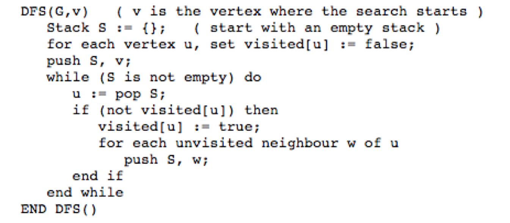
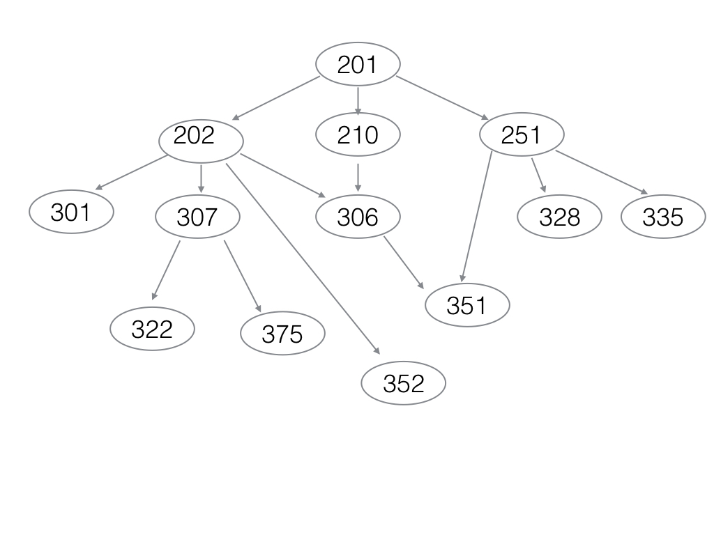

Graphs and Algorithms on Graphs
Overview
- Graph Notes
(Section 1.4 of your text also has an overview of graphs.)
< Make sure you are comfortable with all topics in this handout.
>
Real World Examples
- Southwest
Route
Map
Depth First Search
General idea is to begin at a vertex and traverse as far as
possible.
(We use the term 'Search'
rather loosely here as we are in fact doing a depth-first traversal. Changing the
algorithm
so that it in fact performed a search should be trivial.)
Algorithm:
1. Mark each vertex
in graph G as unvisited
2.
for
each vertex v in graph G
if
v
is
unvisited
then
dfs(v)
dfs(vertex
v)
{
mark
v
as
visited
for
each
vertex
w
adjacent
to
v
if
w
is
unvisited
then
dfs(w)
}
Note: We could also implement this algorithm with a stack rather
than
using recursion.
< In- class Exercise >>
Efficiency?
Applications of Depth-First Search
Connectivity - Are all the
vertices in a graph connected?
Cycles - Does the graph
contain
a cycle?
Bi-Connectivity
This answers the question "Is
there
more than one way to get to a vertex in a graph?"
Articulation Point - A
vertex
in a connected graph that - if deleted - would break the graph into
2
or more disconnected pieces.
A graph with no articulation points is said to be bi-connected.
Depth First Search using a stack

Breadth First Search
General idea is to traverse (note again a traversal and not really a search) vertices level by
level.
Algorithm:
1. Mark each vertex
in graph G as unvisited
2.
for
each vertex v in graph G
if
v
is
unvisited
then
bfs(v)
bfs(vertex
v)
{
mark
v
as
visited
add v to queue
while queue
is not
empty do {
for
each
vertex
w
adjacent
to front vertex
if
w
is
unvisited
then {
mark w as visited
add w to queue
}
remove front
vertex
from queue
Note we implement this algorithm with a queue which does not
easily lend itself to recursion.
< In- class Exercise >>
Efficiency?
Applications of Breadth-First
Search
We can use a BFS tree to determine connectivity as well as
cycles.
It does not have a similar concept as articulation points.
Topological Orderings
Requires using a directed acyclic
graph (or DAG.)
A topological ordering of the vertices in a directed graph such
that,
if there appears a path from Vi to Vj, Vj appears after Vi in the
ordering.

Perhaps a more relevant example in contemporary technology.
How might we use a DFS to perform a topological ordering?
We will explore a second algorithm in class that used the indegree of each vertex where indegree refers to the number of
incoming edges to a vertex.